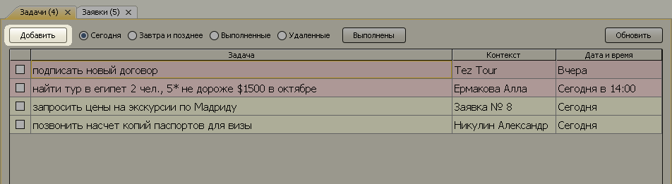
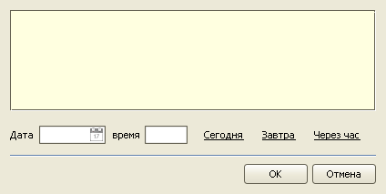
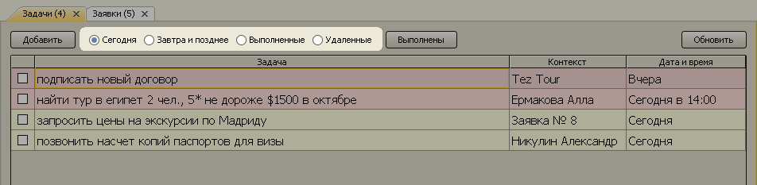
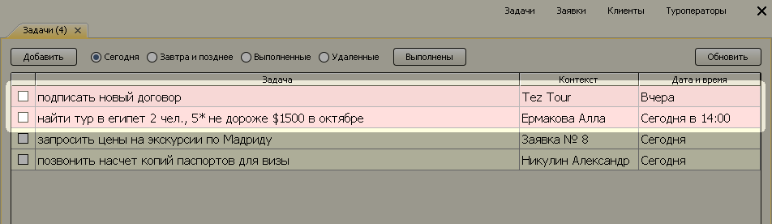
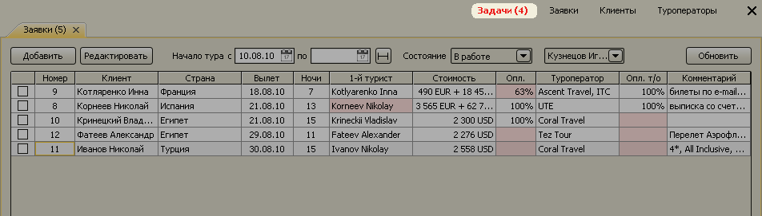
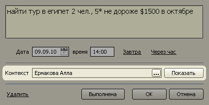
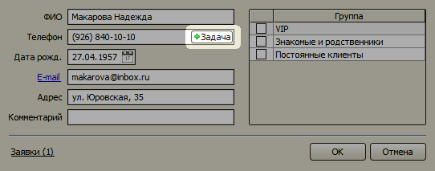
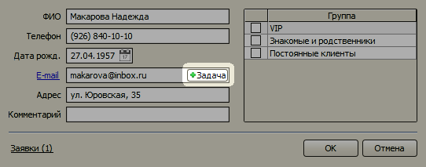
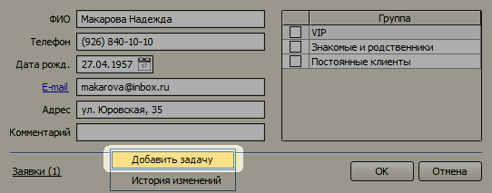
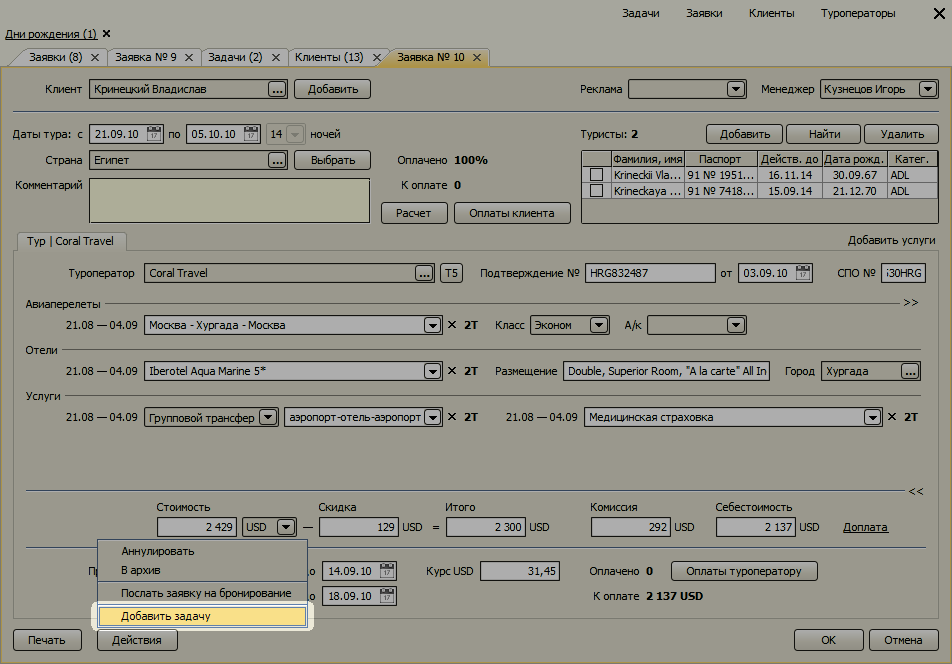

Список задач
Список задач позволяет запланировать все дела, которые необходимо сделать в
течение рабочего дня. Система оповещений напомнит, когда наступит время выполнить
очередную задачу.
- Добавление задачи
- Список задач
- Система оповещений
- Интеграция с заявками и справочниками клиентов и туроператоров
Добавление задачи
Чтобы добавить новую задачу, откройте список задач с помощью кнопки задачи на
верхней панели программы и нажмите кнопку "Добавить".

Откроется форма новой задачи. В большое желтое текстовое поле вводится описание
задачи, а в поля "Дата" и "время" - момент начала выполнения. Вы можете воспользоваться
кнопками "Сегодня", "Завтра", "Через час" для быстрого ввода даты и времени.

После завершения ввода нажмите кнопку "ОК", и задача добавится в список.
Список задач
В списке все задачи разделены на следующие группы:
- Сегодня,
- Завтра и позднее,
- Выполненные,
- Удаленные.
Первая группа "Сегодня" содержит все задачи, которые необходимо выполнить в
течение текущего рабочего дня, а также все задачи, которые не были выполнены в
предыдущие дни. Во второй группе "Завтра и позднее" находятся все задачи, которые
нужно будет выполнить в будущем. В третьей группе содержатся все выполненные задачи.
Четвертая группа состоит из удаленных задач.

Чтобы отобразить задачи из нужной группы, нажмите соответствующий переключатель над
списком задач.
Система оповещений
Каждая задача имеет дату и время начала ее выполнения. При наступлении этого
момента задача в списке подсвечивается розовым цветом.

Если список задач в текущий момент времени закрыт, то выделяется красным цветом
надпись "Задачи" на верхней панели.

В случае когда пользователь работает в другой программе, сигнализация производится
морганием значка программы в панели задач.
Интеграция с заявками и справочниками клиентов и туроператоров
В задаче можно указать дополнительную информацию, связанную с выполнением данной
задачи. Например, если ставится задача позвонить клиенту, можно указать какому
именно клиенту нужно позвонить. Для этого в поле "Контекст" выбирается определенный
клиент из справочника клиентов. В будущем, в момент выполнения задачи, можно
будет одним кликом мыши открыть карточку клиента прямо из формы задачи и посмотреть
полную информацию о клиенте.

Кроме справочника клиентов поле "Контекст" может ссылаться на справочник туроператоров
и на заявки.
Можно создавать задачи из справочников клиентов и туроператоров
и на форме заявки. В таком варианте поле "Контекст" будет автоматически
проинициализировано нужным значением.
В справочниках клиентов и туроператоров задачу можно создать тремя способами:
С помощью кнопки "+Задача" внутри поля "Телефон". В таком случае содержанием
задачи будет "Позвонить".
С помощью кнопки "+Задача" внутри поля "E-mail". В результате содержанием задачи
будет "Написать письмо".
С помощью пункта "Добавить задачу" в контекстном меню формы.

В заявке задача создается с помощью пункта меню "Добавить задачу", вызываемого
кнопкой "Действия", или пункта "Создать задачу" контекстного меню поля "Комментарий".
В последнем случае содержанием задачи будет текст комментария.

Остались вопросы? Напишите нам на e-mail